lon lat group id
1 -83.88675 44.85686 1 alcona
2 -83.36536 44.86832 1 alcona
3 -83.36536 44.86832 1 alcona
4 -83.33098 44.83968 1 alcona
5 -83.30806 44.80530 1 alcona
6 -83.30233 44.77665 1 alconaData Analysis
Chapter 6: Maps
Yu-You Liou (NTU)
Shih Chien University
2026-06-06
Maps
Maps
Plotting geospatial data is one of the most frequently encountered visualisation tasks, and it requires tools that go beyond standard ggplot2 geoms. The challenge can be broken into two distinct sub-problems:
- Drawing the map — rendering geographic boundaries or terrain from a spatial data source.
- Overlaying metadata — projecting additional variables (e.g., population density, election results, rainfall) from a separate data source onto the rendered map.
This chapter addresses both problems and is organised as follows:
- Section 6.1 — polygon-based maps with
geom_polygon(), the simplest approach. - Section 6.2 — modern simple features (sf) maps with
geom_sf(). - Section 6.3 — map projections and coordinate reference systems.
- Section 6.4 — working programmatically with sf data structures.
- Section 6.5 — raster-based maps using satellite imagery.
Polygon maps
Polygon maps
The most straightforward path to drawing a map in ggplot2 is to represent geographic boundaries as ordinary polygons and render them with geom_polygon(). The maps package, bundled with R, provides boundary data accessible through ggplot2::map_data().
The code below retrieves county-level boundaries for the state of Michigan and renames the columns for clarity:
Understanding the data structure
The returned data frame contains four variables:
lon/lat— longitude and latitude of each individual polygon vertex (corner point).id— the name of the county to which the vertex belongs.group— a unique integer identifying each contiguous polygon. Counties that consist of multiple separated parts (e.g., islands) require multiple group values, one per polygon.
From scatterplot to choropleth map
Plotting the raw vertices as points with geom_point() produces a scatterplot of all polygon corners — a useful diagnostic step that confirms the data has been loaded correctly. Replacing geom_point() with geom_polygon() and mapping group connects the vertices into filled county outlines:
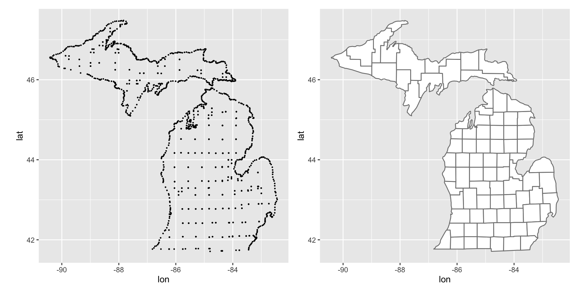
coord_quickmap()
Both plots call coord_quickmap(), which adjusts the plot’s aspect ratio so that one degree of longitude and one degree of latitude occupy equal lengths on the page. Without this correction the map is geometrically distorted — stretched horizontally near the equator or compressed at higher latitudes.
coord_quickmap() is a fast linear approximation. For high-accuracy mapping — especially large regions, polar areas, or published cartographic products — the geom_sf() / coord_sf() workflow (Section 6.2) provides a rigorous solution based on proper map projections.
Simple features maps
Simple features maps
The polygon approach works for quick visualisations, but it has real limitations. In practice, vector geospatial data is distributed in the simple features format, an international standard published by the Open Geospatial Consortium (OGC). The sf package (Pebesma 2018) is the canonical R implementation of this standard.
ggplot2 integrates with sf through two dedicated functions:
geom_sf()— renders sf geometries (points, lines, polygons, multipolygons, …).coord_sf()— controls the coordinate reference system (CRS) applied to the entire plot.
The ozmaps package
The following examples use the ozmaps package (Sumner 2019), which bundles sf datasets for Australian administrative and electoral boundaries. We begin by inspecting the ozmap_states object, which contains the borders of all Australian states and territories:
Simple feature collection with 9 features and 1 field
Geometry type: MULTIPOLYGON
Dimension: XY
Bounding box: xmin: 105.5507 ymin: -43.63203 xmax: 167.9969 ymax: -9.229287
Geodetic CRS: GDA94
# A tibble: 9 × 2
NAME geometry
* <chr> <MULTIPOLYGON [°]>
1 New South Wales (((150.7016 -35.12286, 150.6611 -35.11782, 150.6…
2 Victoria (((146.6196 -38.70196, 146.6721 -38.70259, 146.6…
3 Queensland (((148.8473 -20.3457, 148.8722 -20.37575, 148.85…
4 South Australia (((137.3481 -34.48242, 137.3749 -34.46885, 137.3…
5 Western Australia (((126.3868 -14.01168, 126.3625 -13.98264, 126.3…
6 Tasmania (((147.8397 -40.29844, 147.8902 -40.30258, 147.8…
7 Northern Territory (((136.3669 -13.84237, 136.3339 -13.83922, 136.3…
8 Australian Capital Territory (((149.2317 -35.222, 149.2346 -35.24047, 149.271…
9 Other Territories (((167.9333 -29.05421, 167.9188 -29.0344, 167.93…Structure of an sf tibble
In contrast to the row-per-vertex layout of the polygon approach, each row in an sf tibble represents one complete geographic unit. The special geometry column stores the full polygon definition — potentially a MULTIPOLYGON assembled from several non-contiguous polygons — for each row.
The metadata printed above the tibble (geometry type, bounding box, geodetic CRS) is embedded directly in the sf object and does not need to be managed separately by the analyst.
Drawing a minimal map with geom_sf()
Because geom_sf() automatically detects a column named geometry, no aesthetic mapping needs to be supplied:
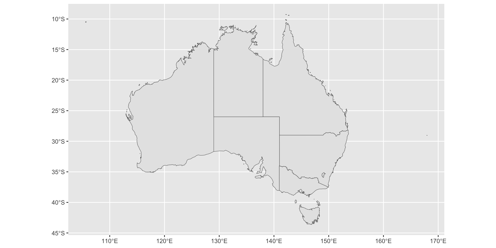
How geom_sf() resolves the geometry aesthetic
geom_sf() relies on an internal geometry aesthetic not used by any other geom. It is resolved by one of three mechanisms, in priority order:
- Implicit — when no mapping is given and the sf object contains a column named
geometry, it is used automatically (as above). - Auto-detect — if the data is an sf object,
geom_sf()will find the geometry column regardless of its name. - Explicit — you can always write
aes(geometry = my_column)to specify the column directly. This is essential when a data frame contains multiple geometry columns.
coord_sf() handles the map projection; its role is discussed fully in Section 6.3.
Layered maps
ggplot2 supports stacking multiple geom_sf() layers to overlay datasets with different levels of geographic detail. The example below draws Australian state boundaries filled with distinct colours, then overlays simplified federal electoral boundaries on top.
Two pre-processing steps are required first:
- Filter — “Other Territories” is removed from
oz_statesviadplyr::filter(), as it spans a large offshore region that distorts the map. - Simplify —
rmapshaper::ms_simplify()reduces the resolution of the electoral boundary data (ozmaps::abs_ced) to match the scale of the final plot, substantially speeding up rendering.
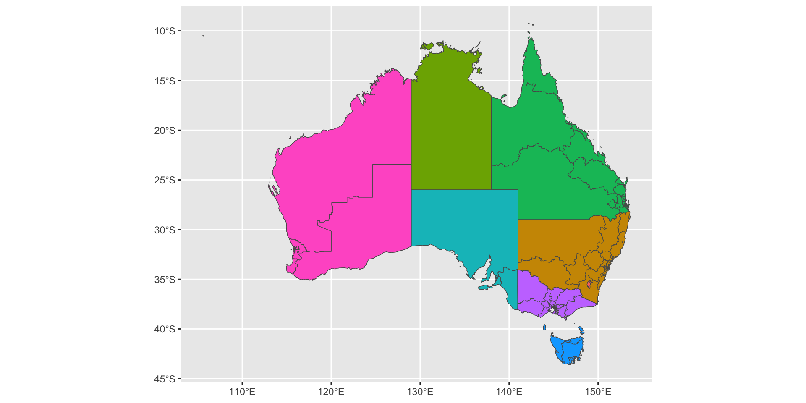
The fill = NAME mapping assigns a distinct colour to each state. Although NAME conveys no quantitative information here, the same pattern generalises to any area-level variable: replacing NAME with a column such as unemployment_rate would produce a choropleth map. Note that when different layers draw from different data frames, the data = argument is specified inside each individual geom_sf() call, and ggplot() is left without a default dataset.
Labelled maps
Text labels can be placed on sf maps using two geoms:
geom_sf_label()— renders labels inside a rectangular background box (suitable when labels must stand out against complex map backgrounds).geom_sf_text()— renders plain text with no box.
Both functions use sf::st_point_on_surface() internally to compute an anchor point that is guaranteed to lie within each polygon.
The example below zooms into the Sydney metropolitan region and labels each federal electorate:
sydney_map <- ozmaps::abs_ced |> filter(NAME %in% c(
"Sydney", "Wentworth", "Warringah", "Kingsford Smith", "Grayndler", "Lowe",
"North Sydney", "Barton", "Bradfield", "Banks", "Blaxland", "Reid",
"Watson", "Fowler", "Werriwa", "Prospect", "Parramatta", "Bennelong",
"Mackellar", "Greenway", "Mitchell", "Chifley", "McMahon"
))
ggplot(sydney_map) +
geom_sf(aes(fill = NAME), show.legend = FALSE) +
coord_sf(xlim = c(150.97, 151.3), ylim = c(-33.98, -33.79)) +
geom_sf_label(aes(label = NAME), label.padding = unit(1, "mm"))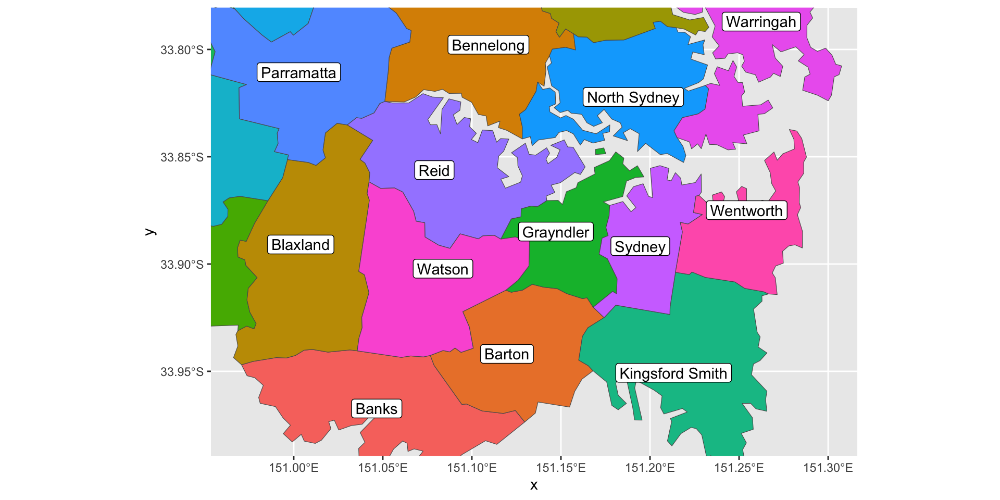
Warning: st_point_on_surface with longitude–latitude data
Running this code triggers a warning indicating that results may be incorrect for longitude–latitude coordinates. The warning arises because many sf geometric algorithms assume a flat Cartesian plane, whereas longitude–latitude data sits on an ellipsoidal surface. For moderate-scale maps at non-polar latitudes, the approximation is typically acceptable. For continent-scale maps or regions near the poles, the data should be reprojected to a planar CRS before labelling.
Adding other geoms
geom_sf() behaves like any other ggplot2 layer and can be freely combined with standard geoms. Provided that coordinates are supplied in the same spatial reference frame as the sf layers, geom_point(), geom_text(), and other geoms work as expected.
The code below overlays the locations of Australian capital cities — stored as a plain tibble of longitude–latitude values — onto the electoral map using geom_point():
oz_capitals <- tibble::tribble(
~city, ~lat, ~lon,
"Sydney", -33.8688, 151.2093,
"Melbourne", -37.8136, 144.9631,
"Brisbane", -27.4698, 153.0251,
"Adelaide", -34.9285, 138.6007,
"Perth", -31.9505, 115.8605,
"Hobart", -42.8821, 147.3272,
"Canberra", -35.2809, 149.1300,
"Darwin", -12.4634, 130.8456
)
ggplot() +
geom_sf(data = oz_votes) +
geom_sf(data = oz_states, colour = "black", fill = NA) +
geom_point(data = oz_capitals, mapping = aes(x = lon, y = lat), colour = "red") +
coord_sf()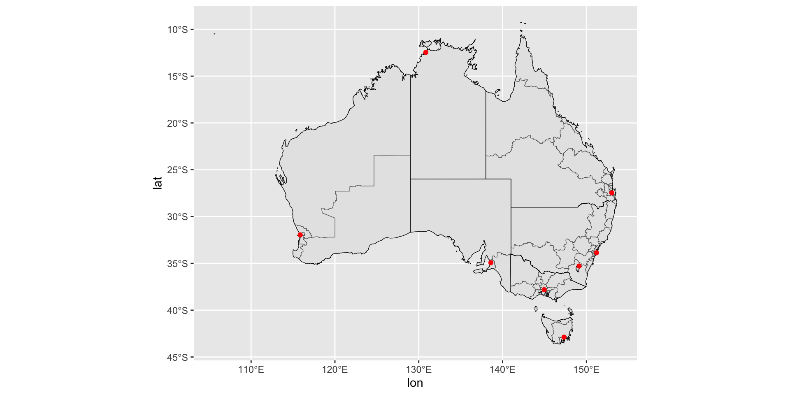
Any aesthetic available in geom_point() can encode additional metadata. For instance, if oz_capitals contained a column recording the number of federal electorates within each metropolitan area, mapping that column to size would produce a proportional symbol map overlaid on the electoral boundaries.
Map projections
Map projections
Treating longitude and latitude as ordinary Cartesian axes is a convenient simplification at small scales, but it becomes geometrically inaccurate at larger scales due to two fundamental problems.
Problem 1 — The shape of the Earth
The Earth is an oblate spheroid, not a flat plane or a perfect sphere. Mapping a coordinate pair (longitude, latitude) to a precise physical location therefore requires a set of geometric assumptions. This collection of assumptions — the shape of the reference ellipsoid, the position of the polar axis, the definition of sea level, and the location of the prime meridian — is called the geodetic datum.
Two commonly used datums are:
- NAD83 (North American Datum 1983) — well-calibrated for North America.
- WGS84 (World Geodetic System 1984) — the global standard used by GPS receivers and most modern geospatial datasets.
The same longitude–latitude pair can correspond to physically different locations under different datums — a discrepancy that can exceed many metres in some regions.
Problem 2 — Projecting an ellipsoid onto a plane
A printed or on-screen map is inherently two-dimensional, yet the Earth’s surface is curved. Any method of “unrolling” an ellipsoidal surface onto a plane inevitably introduces distortion. The map projection defines which geometric properties are preserved and which are sacrificed.
Two frequently cited projection families are:
- Equal-area projections — regions of equal area on the globe occupy equal area on the map. Local shapes may appear distorted.
- Conformal projections — local shapes are preserved (angles are correct at every point). Area is distorted, often severely at high latitudes (the Mercator projection is the most familiar example).
No single projection can simultaneously preserve both area and shape — the analyst must choose a projection that is appropriate for the intended use of the map.
Coordinate Reference Systems (CRS)
A coordinate reference system (CRS) is the complete specification of how geographic coordinates are translated into a 2D map. It combines:
- The geodetic datum.
- The projection type (e.g., Mercator, Lambert Conformal Conic, Albers Equal-Area).
- The projection parameters (origin, standard parallels, false easting/northing, units).
An sf object stores its CRS as embedded metadata, accessible via sf::st_crs():
Coordinate Reference System:
User input: EPSG:4283
wkt:
GEOGCRS["GDA94",
DATUM["Geocentric Datum of Australia 1994",
ELLIPSOID["GRS 1980",6378137,298.257222101,
LENGTHUNIT["metre",1]]],
PRIMEM["Greenwich",0,
ANGLEUNIT["degree",0.0174532925199433]],
CS[ellipsoidal,2],
AXIS["geodetic latitude (Lat)",north,
ORDER[1],
ANGLEUNIT["degree",0.0174532925199433]],
AXIS["geodetic longitude (Lon)",east,
ORDER[2],
ANGLEUNIT["degree",0.0174532925199433]],
USAGE[
SCOPE["Horizontal component of 3D system."],
AREA["Australia including Lord Howe Island, Macquarie Islands, Ashmore and Cartier Islands, Christmas Island, Cocos (Keeling) Islands, Norfolk Island. All onshore and offshore."],
BBOX[-60.56,93.41,-8.47,173.35]],
ID["EPSG",4283]]The verbose well-known text (WKT) string printed above unambiguously describes the CRS. A far more compact representation is the EPSG code — a unique integer assigned by the EPSG Geodetic Parameter Dataset (https://epsg.org). The default CRS for oz_votes corresponds to EPSG 4283 (GDA94):
Changing the projection with coord_sf()
coord_sf() controls the CRS applied to the entire plot. By default it adopts the CRS of the first sf layer. To override this, supply a valid CRS to the crs argument:
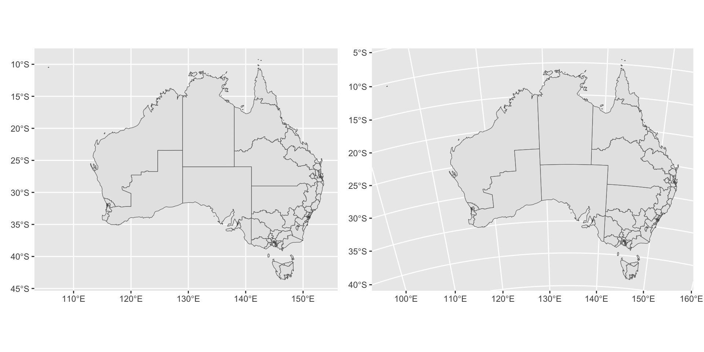
EPSG 3112 is the GDA94 / Geoscience Australia Lambert projection, which minimises area distortion across the Australian continent. The difference in outline shape between the two panels illustrates how substantially the visual impression of a map can change with the choice of projection.
For a thorough treatment of map projections in R, see Geocomputation with R (https://geocompr.robinlovelace.net/).
Working with sf data
Working with sf data
Beyond plotting, the sf package provides a rich set of functions for inspecting and transforming spatial objects. This section introduces the most commonly needed tools; full documentation is available at https://r-spatial.github.io/sf/.
Motivation: complex geographic units
A key advantage of the simple features format is its ability to represent geometrically complex regions in a single row. A MULTIPOLYGON geometry encodes a collection of non-contiguous polygons, which naturally models regions such as archipelagos or territories with enclaves.
The Eden-Monaro federal electorate in New South Wales is a good illustration. It consists of: (1) a large mainland polygon with a hole in the middle (the Australian Capital Territory is a distinct political unit entirely enclosed within Eden-Monaro, and electoral boundaries do not cross state lines), and (2) a small separate island. Both panels below are produced from a single row of sf data:
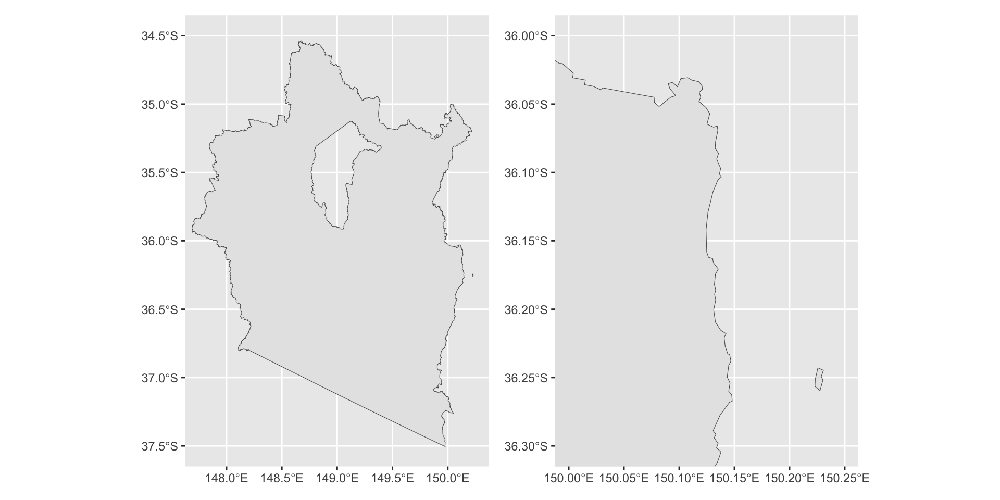
Extracting the geometry column
The geometry column can be isolated as a standalone sfc (simple feature column) object using dplyr::pull():
Metadata helper functions
Several sf functions extract metadata from a geometry object:
st_geometry_type()— returns the geometry type (e.g.,MULTIPOLYGON,POLYGON,LINESTRING,POINT).st_dimension()— returns the spatial dimension count: 2 for XY data, 3 for XYZ.st_bbox()— returns the bounding box as a named numeric vector (xmin,ymin,xmax,ymax).st_crs()— returns the coordinate reference system as a list containing the EPSG code and a WKT string.
Casting between geometry types with st_cast()
A MULTIPOLYGON can be decomposed into its constituent POLYGON objects using st_cast(). For Eden-Monaro, this reveals the two distinct polygons that make up the electorate:
Practical application: isolating islands
The Dawson electorate in Queensland comprises 69 offshore islands plus one large coastal mainland region — 70 polygon components in total:
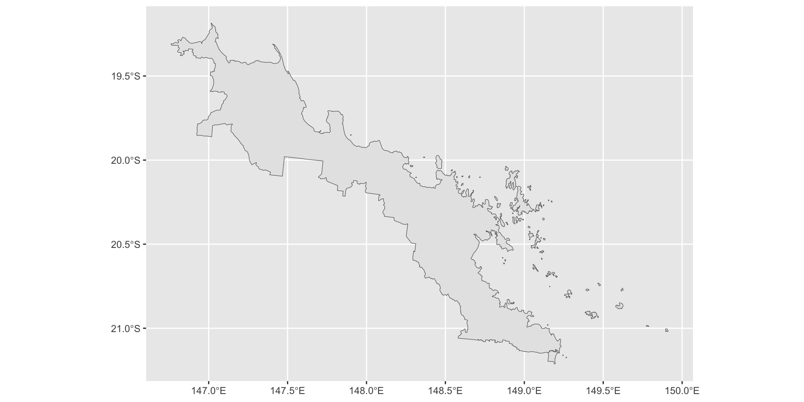
To map only the islands, cast to individual polygons, compute each polygon’s area with st_area(), identify the largest polygon (the mainland) with which.max(), and exclude it by negative indexing:
[1] 69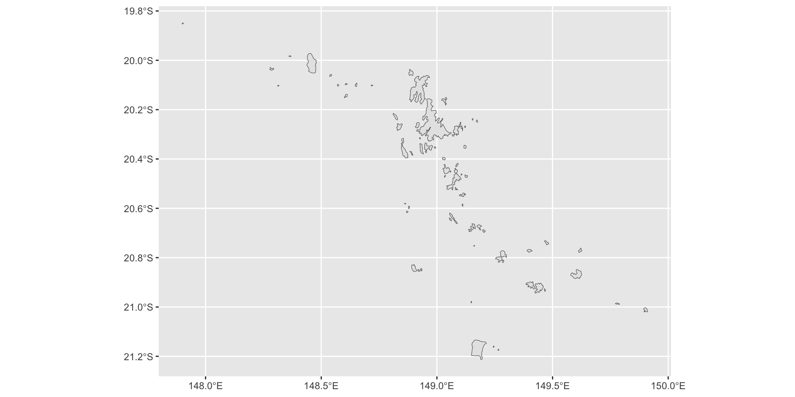
This cast → measure → subset workflow generalises to any situation where the geographic components of a region must be treated independently — for example, separating mainland from island territories, or identifying the largest contiguous region within a complex multipolygon.
Raster maps
Raster maps
In addition to vector-based simple features, geospatial information is commonly stored as raster data: a regular rectangular grid of cells (pixels) where each cell holds one or more numeric values. Rasters are the natural format for satellite imagery, digital elevation models, land cover classifications, and gridded climate datasets.
Many raster file formats — most notably GeoTIFF — embed spatial metadata (geodetic datum, CRS, spatial extent, pixel size) that allows the image to be accurately positioned on the Earth’s surface. R can read these formats via GDAL (Geospatial Data Abstraction Library, https://gdal.org/), which the sf package exposes through sf::gdal_read(). In practice, higher-level packages handle this transparently.
Reading raster data with the stars package
The stars package (Pebesma 2020) provides tools for reading and manipulating spatiotemporal raster arrays. The example below imports a GeoTIFF file containing a visible-light satellite image captured by the Himawari-8 geostationary satellite and originally sourced from the Australian Bureau of Meteorology.
The RasterIO list is passed directly to GDAL: nBufXSize and nBufYSize downsample the image to 600 × 600 pixels on import, reducing memory usage while retaining enough detail for visualisation:
stars object with 3 dimensions and 1 attribute
attribute(s), summary of first 1e+05 cells:
Min. 1st Qu. Median Mean 3rd Qu. Max.
IDE00422.202001072100.tif 0 0 0 18.12981 0 255
dimension(s):
from to offset delta refsys point x/y
x 1 600 -5500000 18333 Geostationary_Satellite FALSE [x]
y 1 600 5500000 -18333 Geostationary_Satellite FALSE [y]
band 1 3 NA NA NA NA Structure of a stars object
A stars object is an n-dimensional labelled array. For this satellite image, the three dimensions are:
| Dimension | Description |
|---|---|
x |
Columns (east–west), associated with a CRS |
y |
Rows (north–south), associated with a CRS |
band |
Colour channel: 1 = Red, 2 = Green, 3 = Blue |
Since the image is greyscale, all three bands carry identical values. More complex datasets may include a time dimension (multi-temporal composites) or additional bands (hyperspectral sensors). The CRS for each spatial dimension is stored alongside the data.
Plotting raster data with geom_stars()
geom_stars(), provided by the stars package, maps raster pixel values to the fill aesthetic. A minimal plot applies ggplot2’s default sequential blue scale to the raw 0–255 pixel values:
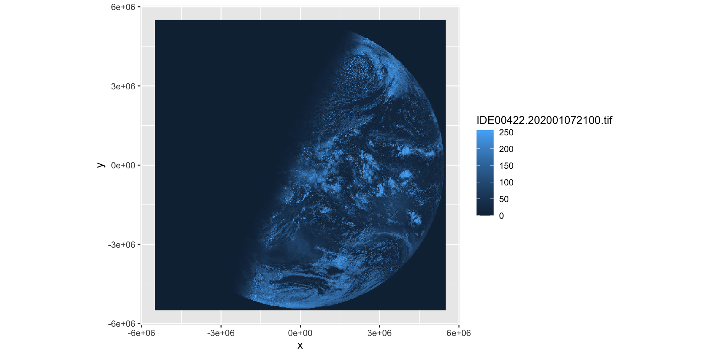
The blue colouring reflects the ggplot2 scale choice rather than the original image appearance. To display the image in greyscale — a more faithful representation of visible-light satellite imagery — apply scale_fill_gradient(low = "black", high = "white").
Separating bands with facet_wrap()
Because sat_vis contains three bands, they can be displayed in separate panels using facet_wrap(). For a greyscale image, all three panels will be identical; for a multi-spectral image, the panels would reveal the spatial pattern captured by each sensor:
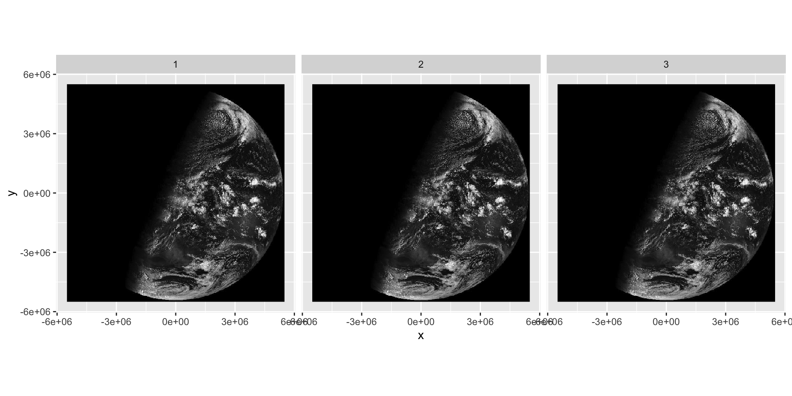
Reprojecting vector data to match a raster CRS
Without reprojection, overlaying oz_states (EPSG 4283) on sat_vis (geostationary projection) would misalign the layers. sf::st_transform() reprojects the vector data to match the raster’s CRS:

With correctly reprojected state boundaries, the white outlines align precisely with the coastlines visible in the satellite image.
Overlaying point data on a reprojected raster
Tabular point data (longitude–latitude columns in a plain data frame) must also be transformed before overlaying on a reprojected raster. The required two-step workflow is:
- Convert to an sf object with
st_as_sf(), specifying the source CRS as WGS84 (EPSG 4326). - Reproject to the raster CRS with
st_transform().
cities <- oz_capitals |>
st_as_sf(coords = c("lon", "lat"), crs = 4326, remove = FALSE)
cities <- st_transform(cities, st_crs(sat_vis))
ggplot() +
geom_stars(data = sat_vis, show.legend = FALSE) +
geom_sf(data = oz_states, fill = NA, color = "white") +
geom_sf(data = cities, color = "red") +
coord_sf() +
theme_void() +
scale_fill_gradient(low = "black", high = "white")
Interpreting the composite map
With capital city locations correctly projected onto the satellite image, it becomes apparent that the image was taken at approximately sunrise in Darwin: eastern capitals (Sydney, Melbourne, Brisbane, Canberra) lie in the illuminated zone, while Perth in the west remains in darkness. City names can be added with:
mapping: label = ~city
geom_text: parse = FALSE, check_overlap = FALSE, na.rm = FALSE
stat_sf_coordinates: na.rm = FALSE, fun.geometry = NULL
position_nudge Some label positioning adjustment would be needed to prevent overlap (see Chapter 8 on annotations).
Note on interactive 3D maps: For true perspective-view or rotatable 3D surface visualisations beyond ggplot2’s scope, the rgl package (http://rgl.neoscientists.org) is the standard tool.
Data sources
Data sources
A wide variety of R packages provide ready-to-use geospatial datasets for use with geom_sf() and related tools:
US-focused data
USAboundaries (https://github.com/ropensci/USAboundaries) — state, county, and ZIP code boundaries for the contiguous United States, plus historical boundaries extending back to the 1600s (Mullen & Bratt 2018).
tigris (https://github.com/walkerke/tigris) — downloads US Census Bureau TIGER/Line shapefiles on demand. Provides state, county, ZIP code, and census tract boundaries, as well as roads, water bodies, and other geographic layers (Walker 2019).
Global data
rnaturalearth (https://CRAN.R-project.org/package=rnaturalearth) — wraps the Natural Earth project (https://naturalearthdata.com/), a free, well-maintained global dataset. Includes country boundaries and first-level administrative subdivisions (states, provinces, regions, counties) for every country (South 2017).
osmar (https://cran.r-project.org/package=osmar) — interfaces with the OpenStreetMap API to retrieve granular vector data: individual streets, buildings, parks, and points of interest at the city block level (Eugster & Schlesinger 2010).
Working with your own shapefiles
If geospatial data are already available locally in ESRI Shapefile format (.shp), they can be imported directly into R as an sf object with:
Once loaded, the object is fully compatible with geom_sf(), coord_sf(), and all other sf-aware functions covered in this chapter.
Acknowledgement
Copyright notice. These teaching materials have been adapted from ggplot2: Elegant Graphics for Data Analysis (3e). All rights are reserved by the original authors and publishers.
Non-commercial use only. These materials are strictly intended for educational purposes and must not be used for commercial gain or profit.
Proper attribution. Any reproduction, distribution, or use of these materials must provide proper attribution to the original source.

ggplot2: Elegant Graphics for Data Analysis